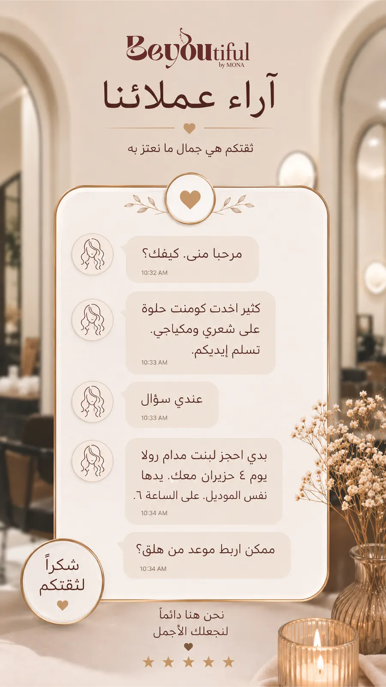
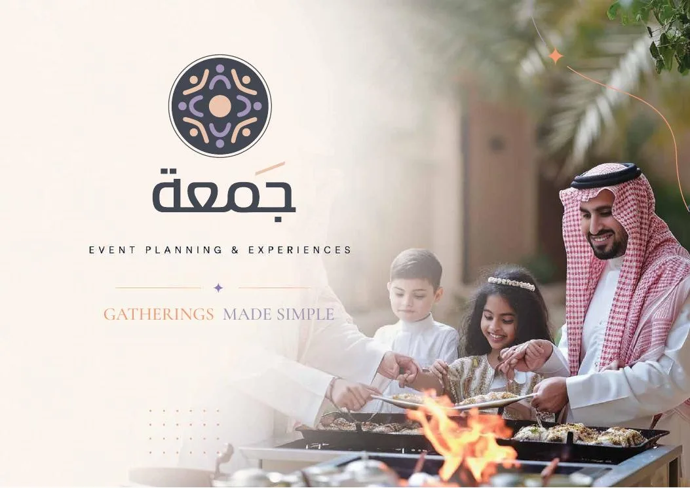
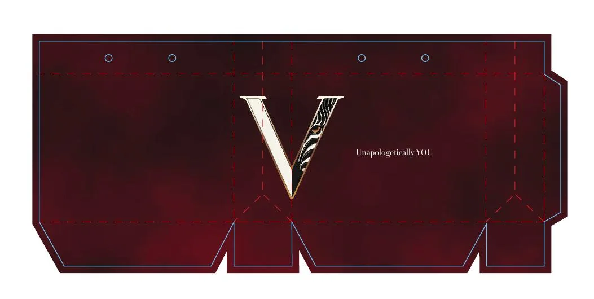
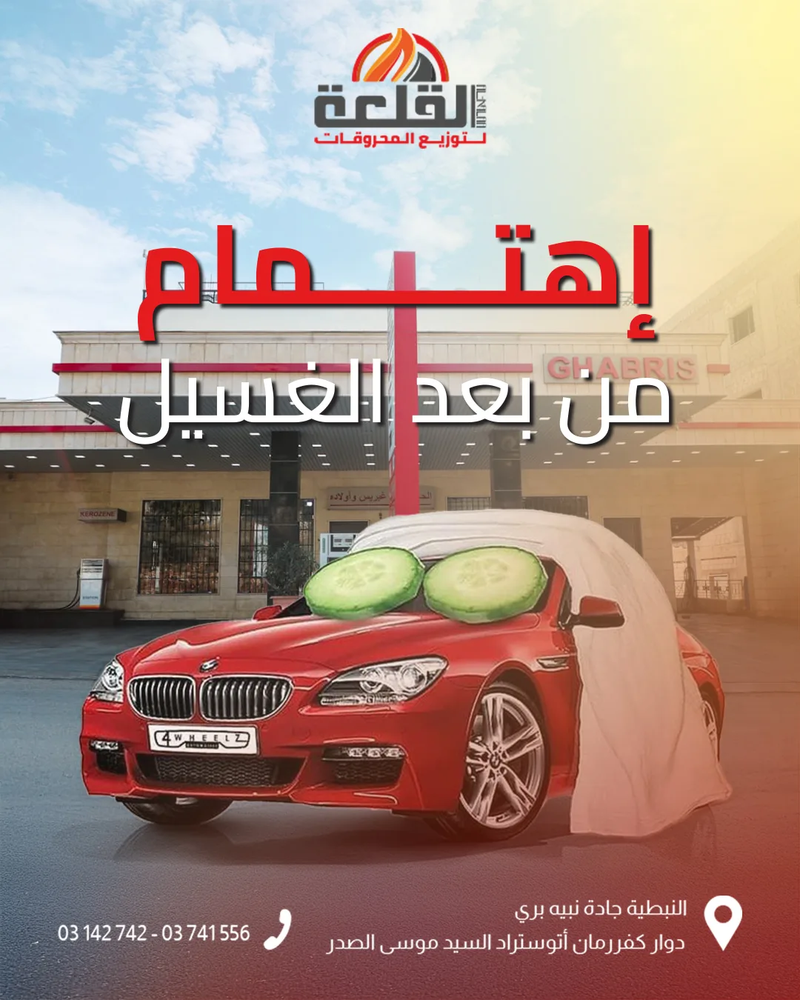
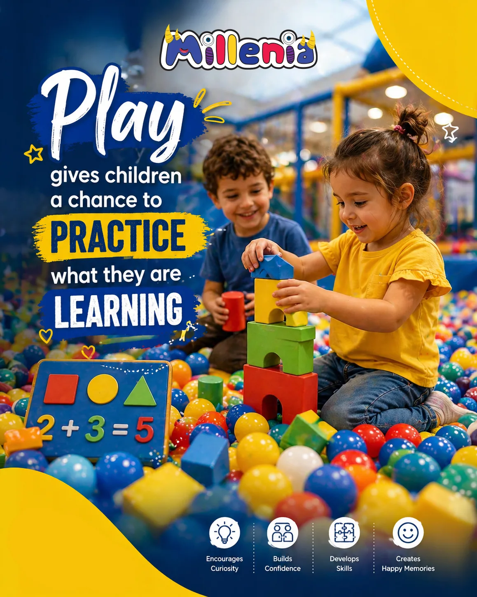
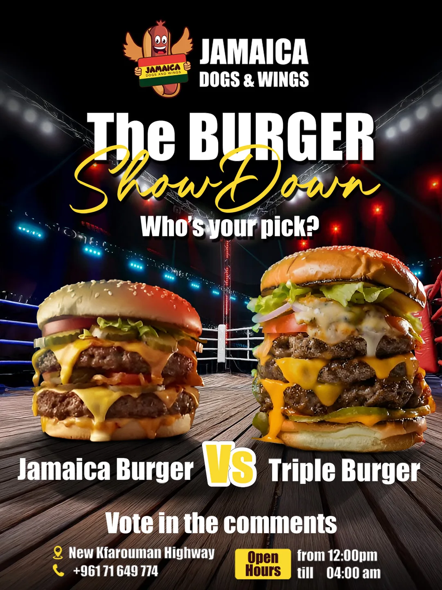
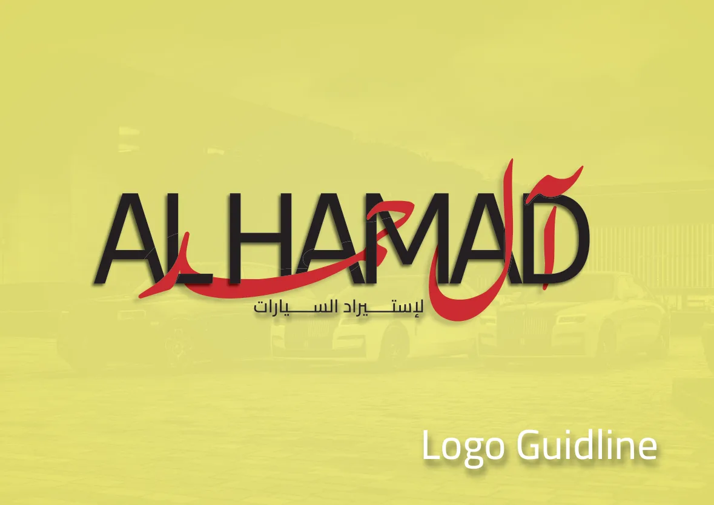

Design systems
built to move
brands.
Brand identity, packaging, campaign systems and production-aware design — shaped across more than a decade of multidisciplinary creative work.
Case studies.
Projects selected for depth, system thinking and range — from corporate identity to physical packaging and sustained campaign design.
ASAS Construction
Corporate Systems↗02Trufella
Luxury Packaging↗03Veranova
Brand + Packaging↗04Café D’or
Packaging Systems↗05Sahel Sanabel
Brand Identity↗06Foron Al Mashi
Character-led Identity↗07Double Dare
Campaign System↗08Safe Tire
Social Design System↗Different worlds.
One standard.
A cross-industry edit from the broader archive — proof that the same level of art direction can adapt to very different audiences, products and tones.
From idea
to output.
Creative direction backed by hands-on execution — including packaging structures, print constraints and digital campaign systems.
Brand Identity
Logos, visual languages, guidelines and brand applications.
Packaging
Families, dielines, labels, mockups and production-aware systems.
Campaign Systems
Repeatable social and advertising languages built for sustained content.
Print & Production
Editorial, corporate collateral, large format and real-world finishing.
AI Creative
AI-assisted product campaigns, visual development and art-direction workflows.
Editorial
Company profiles, presentations and information hierarchy.
Creative Direction
Concept, storytelling, consistency, feedback and design leadership.
More work.
Additional selected work across beauty, construction, events, retail, automotive identity and family-focused communication.

Beautiful by Mona
Beauty / Campaign Design
Buildate
Construction / Social

JAMAH
Events / Brand System

Viola
Retail / Brand Applications

Qalaa
Automotive / Campaign

Millinia
Kids / Entertainment

Jamaica Dogs & Wings
Food / Promotional

Al Hamad
Automotive / Logo Guidelines
Cedars
Playing Cards.
A custom 56-card deck inspired by Lebanon — illustration, card logic, product design and print production brought together as one physical system.

I work where art direction, systems and production meet — building identities that survive beyond the first mockup.
My background spans branding, social campaigns, packaging, print production, editorial systems and multidisciplinary creative direction.
About & experience ↗